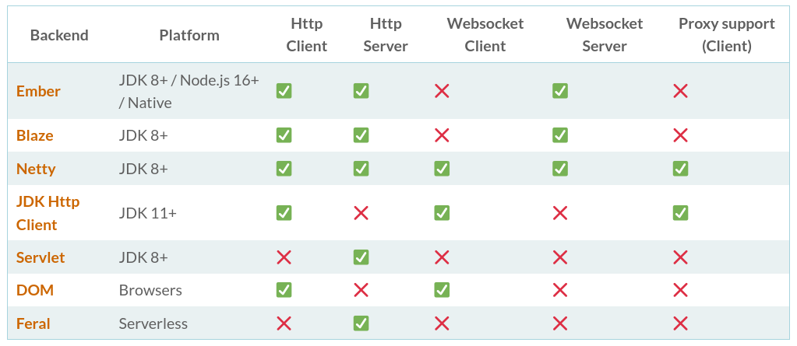
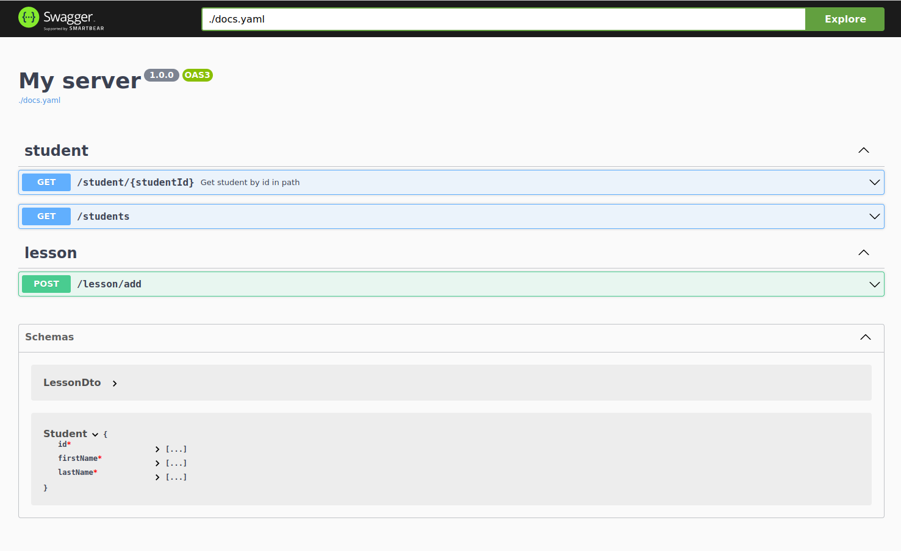
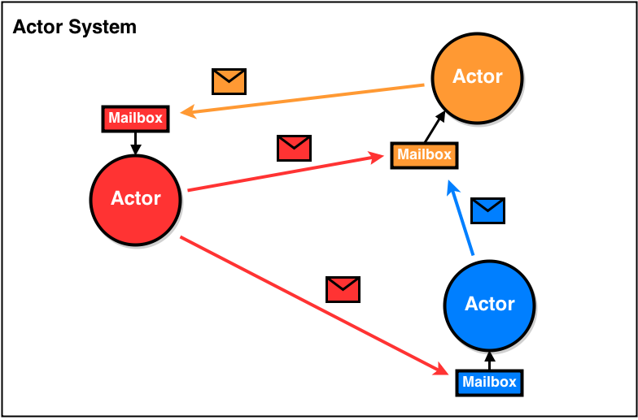

В этой лекции
- Рассмотрим библиотеки для написания бэкенда
- Обзор ряда библиотек из экосистемы ZIO
Задача
Необходимо написать сервер, предоставляющий API для фронтового приложения.
Суть приложения: просмотр и редактирование расписания занятий студентов.
Технические требования:
- Детали работы сервера (адрес БД, пароли и т.п.) передавать через конфигурационный файл;
- Работа с базой данных;
- Ответы от сервера в формате JSON;
- Документация к API;
HTTP4S
HTTP4S
http4s предоставляет стандартный интерфейс для определение http сервера и клиента
Из этого следует, что существует несколько реализаций http4s
Далее будем использовать Ember
HTTP4S
Основную абстракцию, описывающую работу сервера, можно описать как функцию:
Request => ResponseНо не для каждого Request определён соответствующий Response. Выразим это в типах:
Request => Option[Response]Так же нам хотелось бы иметь некоторый контекст выполнения:
Request => F[Option[Response]]В http4s для этого типа используется алиас HttpRoutes[F[_]].
В действительности, в http4s этот алиас определяется чуть сложнее:
type HttpRoutes[F[_]] = Kleisli[OptionT[F, *], Request[F], Response[F]]
case class Kleisli[F[_], -A, B](run: A => F[B])
case class OptionT[F[_], A](value: F[Option[A]])
type HttpRoutes[F[_]] = Request[F] => F[Option[Response[F]]]HTTP4S
Для описания роутов http4s предоставляет специальную dsl (domain-specific language):
// Для query params описываем объекты, чтобы достать значения из конкретных параметров
object OrderingQueryParam extends QueryParamDecoderMatcher[String]("order")
object StudentNameParam extends QueryParamDecoderMatcher[String]("name")
def appRoutes[F[_] : Monad]: HttpRoutes[F] = {
val dsl = Http4sDsl[F]
// Импортируем функции для описания роутов
import dsl._
HttpRoutes.of[F] {
// GET запрос с параметром в пути роута
case GET -> Root / "student" / UUIDVar(studentId) => ???
// GET запрос с query params
case GET -> Root / "students" :? OrderingQueryParam(order) +& StudentNameParam(name) => ???
// POST запрос с обращением к телу запроса
case req @ POST -> Root / "addLesson" => req.body; ???
}
}
HTTP4S
Давайте запустим сервер!
val routes: HttpRoutes[SomeMonad] = appRoutes[SomeMonad]
val httpApp: Kleisli[AppTask, Request[AppTask], Response[AppTask]] = routes.orNotFound
// Request[F] => F[Response[F]] (относительно HttpRoutes[F] пропал Option)
EmberServerBuilder
.default[SomeMonad] // default[F[_] : Async: Network]
.withHost(host"localhost")
.withPort(port"7777")
.withHttpApp(httpApp)
.build // после вызова build мы получаем тип Resource[SomeMonad, Server]
.useForever // useForever начинает использование ресурса
// Важно понимать, что пока перед нами лишь описание запуска сервера
// В зависимости от конкретного SomeMonad способы запуска отличаются В качестве SomeMonad мы должны использовать type constructor, для которого
в implicit scope существуют инстансы Async и Network. Если мы будем использовать
IO из cats-effect, то никаких проблем нет, так как в самой библиотеке необходимые
тайп классы для IO уже определены. Но что же делать, если мы хотим использовать ZIO?
Интермедия
Поговорим про interop
interop - сокращение от interoperation (взаимодействие) - это, в нашем случае, библиотека
предоставляющая инстансы тайп-классов для наших типов данных.
Тайп-классы из cats являются дефакто стандартом, потому большая часть обобщённых библиотек
(http4s в том числе) для абстрагирования используют именно их.
Соответственно, чтобы заставить не связанные с cats библиотеки работать нам необходимо
откуда-то взять недостающие инстансы тайп-классов, что решают interop-библиотеки.
HTTP4S
Давайте запустим сервер c ZIO!
import zio.interop.catz._
import zio.Task
object Main extends ZIOAppDefault {
val routes = appRoutes[Task]
val httpApp = routes.orNotFound
val server = EmberServerBuilder
.default[Task]
.withHost(host"localhost")
.withPort(port"7777")
.withHttpApp(httpApp)
.build
.useForever
override def run: ZIO[Any with ZIOAppArgs with Scope, Any, Any] =
server
}
Сonfig
Сonfig
Ключевые фичи zio-config
- Возможность использовать различные источники для конфигурации;
- Автоматическое представление конфига в виде кейс класса (деривация);
- Проверка ошибок типов, автоматическая валидация и вывод "говорящих" ошибок;
- Возможность автоматически сгенерировать документацию к конфигурации;
Чтобы смочь воспользоваться всеми возможностями, необходимо подключить ряд библиотек:
libraryDependencies += "dev.zio" %% "zio-config" % "version"
libraryDependencies += "dev.zio" %% "zio-config-magnolia" % "version"
libraryDependencies += "dev.zio" %% "zio-config-typesafe" % "version"
libraryDependencies += "dev.zio" %% "zio-config-refined" % "version"
Сonfig
Опишем Layer конфигурации
import zio.config.magnolia.deriveConfig
import zio.config.typesafe._
package object configuration {
private val configDescriptor = deriveConfig[AppConfig]
case class AppConfig(
server: ServerConfig,
database: DatabaseConfig
)
case class ServerConfig(host: String, port: Int)
case class DatabaseConfig(url: String, user: String, password: String)
object Configuration {
// type Layer[+E, +Out] = ZLayer[Any, E, Out]
val layer: Layer[zio.Config.Error, AppConfig] =
ZLayer.scoped(TypesafeConfigProvider.fromResourcePath().load(configDescriptor))
}
}
Сonfig
Но как добавить зависимость к серверу?
import zio.interop.catz._
import zio.Task
object Main extends ZIOAppDefault {
val routes = appRoutes[Task] // Task не принимает никаких зависимостей Task[A] = ZIO[Any, Throwable, A]
val httpApp = routes.orNotFound
val server = EmberServerBuilder
.default[Task] // Здесь ожидается F[_], значит передать, к примеру, RIO[-R, +A] не выйдет
.withHost(host"localhost")
.withPort(port"7777")
.withHttpApp(httpApp)
.build
.useForever
override def run: ZIO[Any with ZIOAppArgs with Scope, Any, Any] =
server
}
Сonfig
Решение
object Main extends ZIOAppDefault {
type AppEnv = AppConfig // далее зависимости можно добавлять через with
type AppTask[A] = ZIO[AppEnv, Throwable, A]
val server: ZIO[configuration.AppConfig, Throwable, Unit] = for {
config <- ZIO.service[AppConfig]
host <- ZIO
.fromOption(Host.fromString(config.server.host))
.orElseFail(new Throwable("Can't parse host"))
port <- ZIO
.fromOption(Port.fromInt(config.server.port))
.orElseFail(new Throwable("Can't parse port"))
httpApp = appRoutes[AppTask].orNotFound
_ <- EmberServerBuilder.default[AppTask]
.withHost(host).withPort(port)
.withHttpApp(httpApp)
.build.useForever
} yield ()
override def run: ZIO[Scope, Any, ExitCode] =
server
.provide(configuration.Configuration.live)
.tapErrorCause(err => ZIO.logErrorCause("Server bootstrap failed", err))
.exitCode
}tapir
tapir
Давайте ещё раз взглянем на роуты
HttpRoutes.of[F] {
// GET запрос с параметром в пути роута
case GET -> Root / "student" / UUIDVar(studentId) => ???
// GET запрос с query params
case GET -> Root / "students" :? OrderingQueryParam(order) +& StudentNameParam(name) => ???
// POST запрос с обращением к телу запроса
case req @ POST -> Root / "addLesson" => req.body; ???
}
Здесь можно выделить пару проблем:
- Нет типизации. К примеру, в случае с POST неизвестно, что придёт, и что вернётся;
- Документировать API придётся вручную;
Tapir призван решить наши проблемы.
tapir
Declarative, type-safe web endpoints library.
Ключевые возможности:
- Типо-безопасность;
- Автоматическая генерация документации для эндпоинтов;
- Есть возможность интеграции с большинством существующих стеков;
- Трейсинг, метрики, метаданные;
tapir
Опишем ряд эндпоинтов:
// Endpoint[SECURITY_INPUT, INPUT, ERROR_OUTPUT, OUTPUT, -R]
import sttp.tapir._
import sttp.tapir.json.circe.jsonBody
import sttp.tapir.generic.auto._
val getStudent: Endpoint[Unit, String, String, Student, Any] =
endpoint
.tag("student").summary("Get student by id in path")
.get
.in("student" / path[String]("studentId"))
.errorOut(stringBody)
.out(jsonBody[Student])
val allStudents: Endpoint[Unit, (String, String), String, List[Student], Any] =
endpoint
.tag("student")
.get
.in("students" / query[String]("studentName") and query[String]("orderBy"))
.out(jsonBody[List[Student]])
val addLesson: Endpoint[Unit, LessonDto, String, Unit, Any] =
endpoint
.tag("lesson")
.post
.in("lesson" / "add").in(jsonBody[LessonDto])
.errorOut(stringBody)
tapir
Далее добавим для наших эндпоинтов обработчики:
import import sttp.tapir.ztapir.RichZEndpoint
def endpoints(lessonRepo: LessonRepo) =
NonEmptyList.of(
docs.getStudent.zServerLogic { studentId =>
ZIO.succeed(Student(s"$studentId", "Richard", "Black"))
},
docs.allStudents.zServerLogic {
case (orderBy, studentName) => ZIO.fail("Not implemented")
},
docs.addLesson.zServerLogic { dto =>
lessonRepo.addLesson(dto).orElseFail("Error")
}
)
// пример частично определённого эндпоинта
val baseApiAuthEndpoint
: ZPartialServerEndpoint[AuthService, String, Principal, Unit, (StatusCode, ErrorResult), Unit, Any] =
baseApiPublicEndpoint
.securityIn(tapir.header[String]("Authorization"))
.zServerSecurityLogic[PrincipalService, Principal] { jwt =>
ZIO
.serviceWithZIO[PrincipalService](_.checkJwt(jwt))
}
tapir
Соберём из этого http app и добавим swagger:
val server: ZIO[configuration.AppConfig with SayHelloService, Throwable, Unit] = for {
config <- ZIO.service[AppConfig]
host <- ZIO.sussed(???)
port <- ZIO.sussed(???)
lessonRepo <- ZIO.service[LessonRepo]
apiEndpoints = endpoints.endpoints(lessonRepo).toList
swaggerEndpoints = SwaggerInterpreter().fromServerEndpoints(apiEndpoints, "My server", "1.0.0")
routes = ZHttp4sServerInterpreter().from(apiEndpoints ++ swaggerEndpoints).toRoutes
httpApp = Router("api/" -> routes).orNotFound
_ <- EmberServerBuilder.default[AppTask]
.withHost(host).withPort(port)
.withHttpApp(httpApp)
.build.useForever
} yield ()
Tapir
circe
circe
A JSON library for Scala powered by Cats
Основополагающими для библиотеки являются два тайп-класса: Encoder и Decoder.
Encoder описывает то, как тип A должен быть представлен в виде json.
Decoder, напротив, выражает то, как из json получить конкретный тип A.
trait Encoder[A] extends Serializable { self =>
def apply(a: A): Json
}
trait Decoder[A] extends Serializable { self =>
def apply(c: HCursor): Decoder.Result[A]
}
Совокупно Encoder и Decoder называют Codec.
Tapir требует существование Encoder и Decoder, когда мы пишем jsonBody[A]
circe
Реализуем Encoder и Decoder для кейс класса Student.
case class Student(id: String, name: String, age: Int)
object Student {
implicit val encoder: Encoder[Student] = new Encoder[Student] {
override def apply(a: Student): Json =
Json.obj(
"id" -> a.id.asJson,
"name_and_age" -> s"${s.name} is ${s.age} years old".asJson
)
}
implicit val decoder: Decoder[Student] = new Decoder[Student] {
override def apply(c: HCursor): Result[Student] = for {
id <- c.downField("id").as[String]
name <- c.downField("name").as[String]
age <- c.downField("age").as[Int]
} yield Student(id, name, age)
}
}
val student = Student("id", "Robin", 20)
println(student.asJson.noSpaces) // {"id":"id","name_and_age":"Robin is 20 years old"}
val studentJson = Json.obj(
"id" -> "123".asJson,
"name" -> "Jack".asJson,
"age" -> 13.asJson
).toString()
println(decode[Student](studentJson)) // Either[Error, Student]
circe
В общем случае Encoder и Decoder можно реализовать куда проще:
case class Student(id: String, name: String, age: Int)
case class Student(id: String, name: String, age: Int)
object Student {
// deriveEncoder и deriveDecoder автоматически генерируют для кейс классов
// код, в котором ключи - имя поля, значения - значения полей
implicit val encoder: Encoder[Student] = deriveEncoder[Student]
implicit val decoder: Decoder[Student] = deriveDecoder[Student]
// Но можно и ещё проще. Codec совмещает в себе сразу и Encoder, и Decoder
implicit val codec: Codec[Student] = deriveCodec[Student]
}
// Но и это не предел упрощений
import io.circe.generic.JsonCodec
@JsonCodec case class AnotherStudent(id: String, name: String, age: Int)
quill
quill
Quill provides a QDSL to express queries in Scala and execute them in a target language.
Ключевые возможности:
- Отсутствует необходимость в бойлерплейте для описания схемы БД;
- Возможность валидации корректносит запросов к БД во время компиляции;
- Возможность увидеть именно тот запрос, который будет выполняться;
quill
Поговорим немного о контексте выполнения запросов.
Контекст предоставляют интерфейс для выполнения запросов и представляют конкретную БД.
val ct1 = new SqlMirrorContext(MirrorSqlDialect, Literal) // не делает никаких реальных запросов
val ct2 = new PostgresZioJdbcContext(Escape) // для подключения к Postgresql
Контекст дополнительно принимает dialect и naming strategy.
Из коробки в quill доступно 5 диалектов:
- io.getquill.H2Dialect
- io.getquill.MySQLDialect
- io.getquill.PostgresDialect
- io.getquill.SqliteDialect
- io.getquill.SQLServerDialect
- io.getquill.OracleDialect
quill
Naming strategy - это параметр, определяющий то, как транслируются идентификаторы при обращении к БД.
| strategy | example |
|---|---|
| io.getquill.naming.Literal | some_ident -> some_ident |
| io.getquill.naming.Escape | some_ident -> "some_ident" |
| io.getquill.naming.UpperCase | some_ident -> SOME_IDENT |
| io.getquill.naming.LowerCase | SOME_IDENT -> some_ident |
| io.getquill.naming.SnakeCase | someIdent -> some_ident |
| io.getquill.naming.CamelCase | some_ident -> someIdent |
| io.getquill.naming.MysqlEscape | some_ident -> `some_ident` |
| io.getquill.naming.PostgresEscape | $some_ident -> $some_ident |
Так же есть возможность комбинировать naming strategy с помощью NamingStrategy(SnakeCase, UpperCase)
quill
Примеры запросов
val ctx = new SqlMirrorContext(MirrorSqlDialect, Literal)
import ctx._
case class Student(id: String, name: String, age: Int)
case class Lesson(id: String, lessonTitle: String)
case class StudentToLesson(studentId: String, lessonId: String)
val q = quote { // SELECT x1.id, x1.name FROM Student x1 WHERE x1.name = 'John'
query[Student].filter(_.name == "John")
}
val q2 = quote { // UPDATE Student AS x2 SET age = (x2.age + 1) WHERE x2.age > 18
query[Student].filter(_.age > 18).update(st => st.age -> (st.age + 1))
}
// SELECT x3.id, x3.lessonTitle FROM StudentToLesson studentToLesson
// INNER JOIN Lesson x3 ON x3.id = studentToLesson.lessonId
// WHERE ? = studentToLesson.studentId
def lessonsOfStudent(st: Student) = quote {
for {
studentToLesson <- query[StudentToLesson] if (lift(st.id) == studentToLesson.studentId)
lesson <- query[Lesson].join(_.id == studentToLesson.lessonId)
} yield lesson
}
run(lessonsOfStudent(Student("123", "John", 19))) quill
Использование quill в http4s with ZIO backend
// Определим для приложения один общий контекст
object DBCtx extends PostgresZioJdbcContext(Escape)
trait StudentRepo {
// QIO[T] = ZIO[DataSource, SQLException, T]
def find(userId: String): QIO[Option[Student]]
}
final case class StudentRepoImpl(ds: DataSource)
extends StudentRepo {
import DBCtx._
implicit val env: Implicit[DataSource] = Implicit(ds)
override def find(userId: String): QIO[Option[Student]] =
run(query[Student].filter(_.id == lift(userId)).take(1))
.implicitly.map(_.headOption)
}
object StudentRepo {
def layer: ZLayer[DataSource, Nothing, StudentRepo] =
ZLayer.fromFunction(StudentRepoImpl.apply _)
}
quill
Транзакции
object DBCtx extends PostgresZioJdbcContext(Escape)
trait StudentRepo {
def delete(id: String): QIO[Unit]
}
trait LessonRepo {
def deleteStudentFromLesson(studentId: String): QIO[Unit]
}
val studentRepo: StudentRepo = ???
val lessonRepo: LessonRepo = ???
def deleteStudent(userId: String): ZIO[DataSource, Throwable, Unit] = DBCtx.transaction {
for {
_ <- lessonRepo.deleteStudentFromLesson(userId)
_ <- ZIO.fail(throw new Exception("Oh..."))
_ <- studentRepo.delete(userId)
} yield ()
}
// def transaction[R <: DataSource, A](op: ZIO[R, Throwable, A]): ZIO[R, Throwable, A]
Альтернативы quill
Альтернативы quill
doobie
Doobie is a pure functional JDBC layer for Scala and Cats.
val xa = Transactor.fromDriverManager[IO](
driver = "org.postgresql.Driver", url = "jdbc:postgresql:world", user = "postgres", password = "password", logHandler = None
)
case class Country(code: String, name: String, population: Long)
def find(n: String): ConnectionIO[Option[Country]] =
sql"select code, name, population from country where name = $n".query[Country].option
find("France").transact(xa).unsafeRunSync()
Альтернативы quill
slick
Slick is an advanced, comprehensive database access library for Scala with strongly-typed, highly composable APIs.
final case class Coffee(name: String, price: Double)
class Coffees(tag: Tag) extends Table[Coffee](tag, "COFFEES") {
def name = column[String]("NAME")
def price = column[Double]("PRICE")
def * = (name, price).mapTo[Coffee]
}
// TableQuery даёт доступ к slick's API.
val coffees = TableQuery[Coffees]
coffees += Coffee("Latte", 2.50) // insert data
coffees.map(_.name) // fetching data
coffees.filter(_.price < 10.0).sortBy(_.name) // fetching data
Ещё способы написать backend
play framework
The High Velocity Web Framework For Java and Scala
Основные возможности:
- Stateless;
- fully asynchronous;
- Большие возможности к масштабированию;
- Поддержка Websocket, Comet, EventSource из коробки;
- Своя встроенная библиотека для сериализации\десериализации JSON;
- Шаблонизатор - twirl;
actors (Akka, ZIO Actors)
Akka is a toolkit for building highly concurrent, distributed, and resilient message-driven applications for Java and Scala.
ZIO Actors is a high-performance, purely-functional library for building typed actors backed by ZIO.
ZIO Http
ZIO HTTP is a scala library for building http apps. It is powered by ZIO and Netty and aims at being the defacto solution for writing, highly scalable and performant web applications using idiomatic Scala.
import zio._
import zio.http._
object HelloWorld extends ZIOAppDefault {
val app: HttpApp[Any] =
Routes(
Method.GET / "text" -> handler(Response.text("Hello World!"))
).toHttpApp
override val run =
Server.serve(app).provide(Server.default)
}
finagle
Finagle is an extensible RPC system for the JVM, used to construct high-concurrency servers.
import com.twitter.finagle.{Http, Service}
import com.twitter.finagle.http
import com.twitter.util.{Await, Future}
object Server extends App {
val service = new Service[http.Request, http.Response] {
def apply(req: http.Request): Future[http.Response] =
Future.value(
http.Response(req.version, http.Status.Ok)
)
}
val server = Http.serve(":8080", service)
Await.ready(server)
}Тестирование
zio test
object Test extends ZIOSpecDefault {
object Solver {
def solve(a: Double, b: Double, c: Double): ZIO[Any, String, (Double, Double)] =
for {
_ <- ZIO.when(a == 0.0)(ZIO.fail("Unsolvable"))
D <- ZIO.succeed((b * b) - 4 * a * c)
x1 <- ZIO
.succeed((-b + Math.sqrt(D)) / (2 * a))
x2 <- ZIO
.succeed((-b - Math.sqrt(D)) / (2 * a))
} yield (x1, x2)
}
override def spec: Spec[TestEnvironment with Scope, Any] =
suite("Solver")(
test("can solve simple equation") {
for {
res <- Solver.solve(1, 0, 0)
} yield assertTrue((0.0, 0.0) == res)
},
test("can't solve with a = 0") {
for {
exit <- Solver.solve(0, 1, 1).exit
} yield assertTrue(exit == Exit.fail("Unsolvable"))
}
)
}zio test
case class User(id: String, login: String, passwordHash: String)
case class RegistrationDto(login: String, password: String)
trait MailService { def sendMail(to: String, body: String): Task[Unit] }
trait UserRepo { def create(login: String, password: String): Task[User] }
trait RegistrationService { def register(dto: RegistrationDto): Task[String] }
final private case class RegistrationServiceImpl(userRepo: UserRepo, mailService: MailService)
extends RegistrationService {
override def register(dto: RegistrationDto): Task[String] = for {
user <- userRepo.create(dto.login, dto.password)
_ <- mailService.sendMail(dto.login, "Confirmation")
} yield user.id
}
object RegistrationService {
val layer: ZLayer[UserRepo with MailService, Nothing, RegistrationService] = ZLayer {
for {
userRepo <- ZIO.service[UserRepo]
mailService <- ZIO.service[MailService]
} yield RegistrationServiceImpl(userRepo, mailService)
}
}Как протестировать RegistrationService?
ZIO Mock
trait MailService { def sendMail(to: String, body: String): Task[Unit] }
trait UserRepo { def create(login: String, password: String, age: Int): Task[User] }
object MailServiceMock extends Mock[MailService] {
object Send extends Effect[(String, String), Throwable, Unit]
val compose: URLayer[Proxy, MailService] = ZLayer {
for {
proxy <- ZIO.service[Proxy]
} yield new MailService {
override def sendMail(to: String, body: String): Task[Unit] = proxy(Send, to, body)
}
}
}
object UserRepoMock extends Mock[UserRepo] {
object Create extends Effect[(String, String, Int), Throwable, User]
val compose: URLayer[Proxy, UserRepo] = ZLayer {
for (proxy <- ZIO.service[Proxy]) yield new UserRepo {
override def create(login: String, password: String, age: Int): Task[User] =
proxy(Create, login, password, age)
}
}
}ZIO Mock
override def spec: Spec[TestEnvironment with Scope, Any] =
suite("Registration")(
test("can register user"){
val mockedEmail = MailServiceMock.Send(
assertion = Assertion.equalTo(("user@gmail.com", "Confirmation")),
result = Expectation.unit
).toLayer
val mockedUserRepo = UserRepoMock.Create(
assertion = Assertion.equalTo(("user@gmail.com", "qwer1234", 18)),
result = Expectation.value(User("user_id", "user@gmail.com", "hash"))
).toLayer
val program = for {
registrationService <- ZIO.service[RegistrationService]
userId <- registrationService.register(RegistrationDto("user@gmail.com", "qwer1234", 18))
} yield userId
for {
userId <- program.provide(RegistrationService.layer, mockedEmail, mockedUserRepo)
} yield assertTrue(userId == "user_id")
}
)Блиц
ZIO Cache
object ZIOCacheExample extends ZIOAppDefault {
def timeConsumingEffect(key: String) =
ZIO.sleep(5.seconds).as(key.hashCode)
def run =
for {
cache <- Cache.make(
capacity = 100,
timeToLive = Duration.Infinity,
lookup = Lookup(timeConsumingEffect)
)
result <- cache
.get("key1")
.zipPar(cache.get("key1"))
.zipPar(cache.get("key1"))
_ <- ZIO.debug(
s"Result of parallel execution of three effects with the same key: $result"
)
hits <- cache.cacheStats.map(_.hits)
misses <- cache.cacheStats.map(_.misses)
_ <- ZIO.debug(s"Number of cache hits: $hits")
_ <- ZIO.debug(s"Number of cache misses: $misses")
} yield ()
}chimney
The battle-tested Scala library for data transformations
import io.scalaland.chimney.dsl._
case class User(username: String, address: List[Address])
case class UserDTO(username: String, address: List[Address])
User(
Username("John"),
List(Address("Paper St", "Somewhere"))
).transformInto[UserDTO]ZIO Optics
ZIO Optics is a library that makes it easy to modify parts of larger data structures
import zio.optics._
case class Developer(name: String, manager: Manager)
case class Manager(name: String, rating: Rating)
case class Rating(upvotes: Int, downvotes: Int)
val developerLens = Lens[Developer, Manager](
get = developer => Right(developer.manager),
set = manager => developer => Right(developer.copy(manager = manager))
)
val managerLens = Lens[Manager, Rating](
get = manager => Right(manager.rating),
set = rating => manager => Right(manager.copy(rating = rating))
)
val ratingLens = Lens[Rating, Int](
get = rating => Right(rating.upvotes),
set = upvotes => rating => Right(rating.copy(upvotes = upvotes))
)
val optic = developerLens >>> managerLens >>> ratingLens
val jane = Developer("Jane", Manager("Steve", Rating(0, 0)))
val updated = optic.update(jane)(_ + 1)